Breedable Mixable Pigs
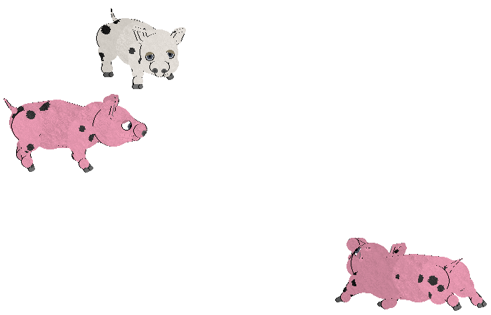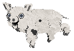
Pigs that are not only breedable, but can be bred with dogs too! They also have the original pig personality values. Remember to replace the original pig file after breeding/adopting or your pigs won't have the special pig behavior!
Download
Mixable Bunnies
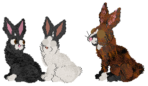
I redid my breedable bunnies to be anatomically closer to the pfm bunnies. These ones look a lot better if you breed them with a cat. Make sure to replace the original bunny file after breeding/adopting so bunnies will get their bunny animations back!
Bunnies with Bunny Personality
Bunnies with Random Personality
Hamsters
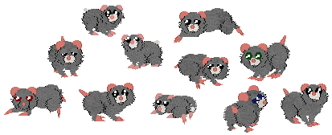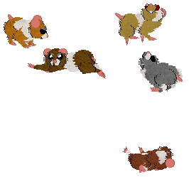
Little hamsters! I originally intended for these to be a PUGS project so I may do more with these in the future. I was intending for the LNZ to be pasted onto some mixies because they do not breed true(They're too small and they have paintball eyes!).
Syrian Base
Dwarf Base
Syrian with wonky variations(Bunny OW)
Foxes with Fox Behavior
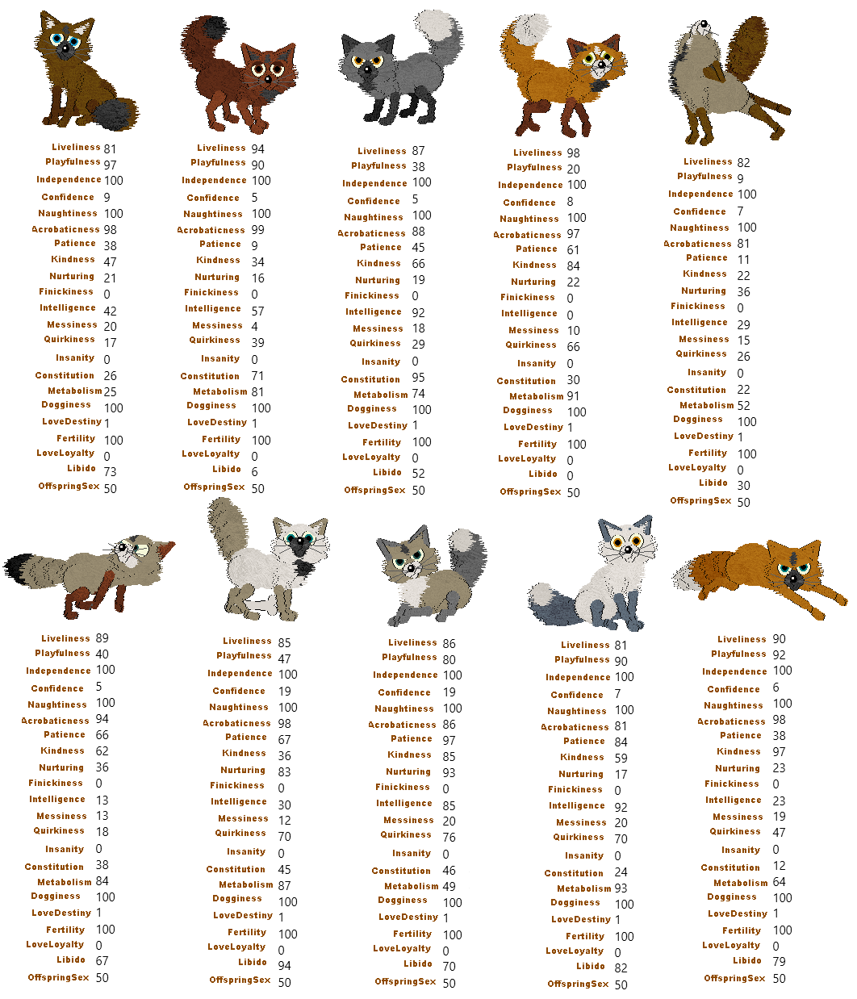
I set these so that even though they have fixed personality values so they act like foxes, the rest of their traits are fully random so they will have unique personalities as well as a foxy one! The original petz breeds do not have as many fully random traits. As of now the colors of their ears pass down weird. I will eventually have better files available for breeding, and all breeding files will work with the foxes you adopt from this one!
This is a project I have been working on for quite a while. Click here to see the chaotic mess this breed was before breed personality was discovered!
Download them here. All their sounds are internal and do not need an extra file to work :D
Random Gene Generator (Mini Pets)
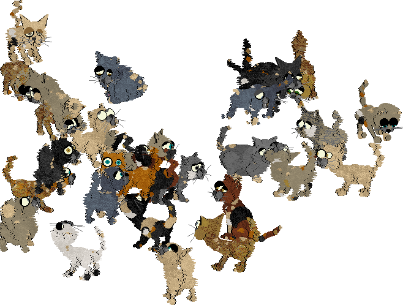
A file to overwrite any breed you wanna randomize the colors and personality of! (this always produces minis but I'll upload one that doesn't, or you're allowed to change it yourself ^u^) To use this you just overwrite it onto any breed including dogz, adopt the pets, put the breed files back to normal, then breed!
WARNING: ALWAYS make sure to match the breed ID to the breed you're overwriting or you will adopt pets that don't work!!!
Also note: Alley cats themselves can't be minified by this file, but mixing them with another tiny breed will make tiny alley offspring
Download them here.
Random Bunnies rawr
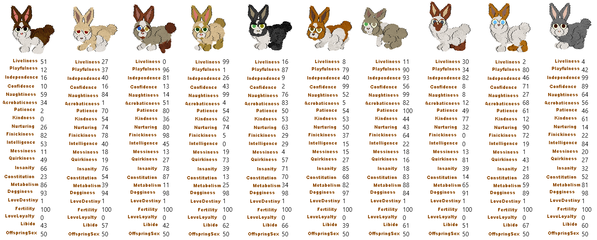
They're actually the same as my other breedable bunnies. Except these ones generate with fully random personality values!
Download them here.
Funky Cat
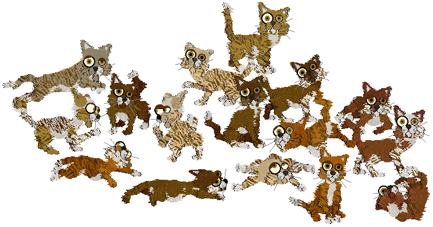
Funky cats are a lot like alley cats, but they are very chill. They dance like calicos and flop like persians. They sound the same as the regular alley cats, but a lot more calm! Download them here.
PUGS Party Poodles
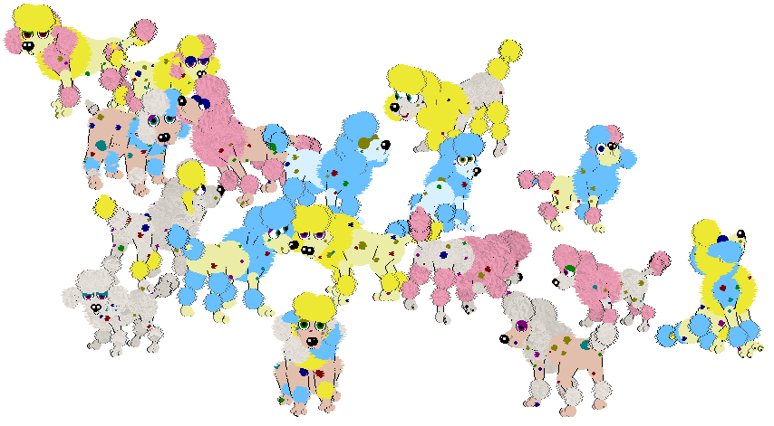
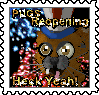 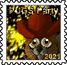 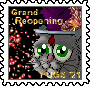 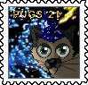
In celebration of the 2021 PUGS Reopening event! Download them here.
Bunnies with Insane Variation
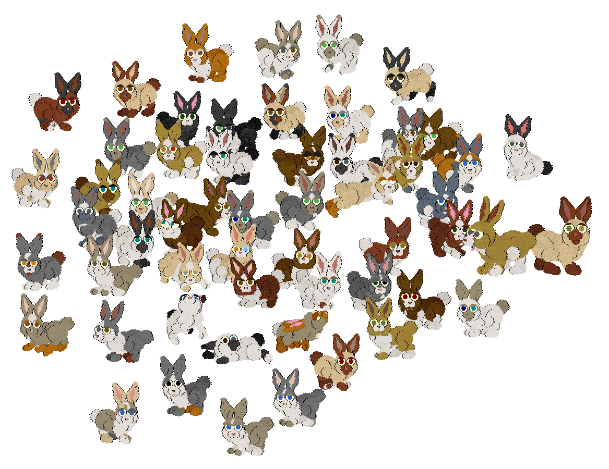
All bunny OW's for breeding, or you can just adopt a unique bunny :) I like using the different breeds for extra personality traits, including dogz for guaranteed trickster buns. I may update update these with more variations or breed choices later on.
Warning: dog bunnies will appear very deformed until you switch to a cat-based OW or back to the original bunny file.
Chinchilla Persian(Slightly smaller than the other bunnies)
Maine Coon
Orange Shorthair
Persian(Continental Giant Breed)
Poodle
SheepDog
Killer Bunnies
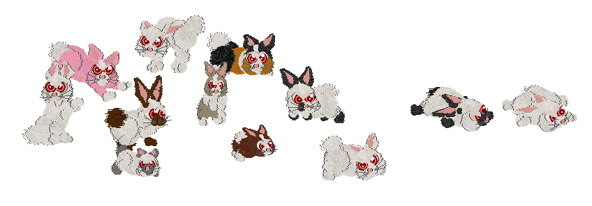
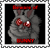A stamp for owners of a killer bunny
The bunny breed, but with angry red eyes. Scaredy buns will appear angry less often. It's funny to flop them onto their bellies when they're angry. Download them here.
Bombay Catz
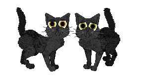
Just a basic, generic petzy cat. I wanted to make something basic and easy for once that doesn't turn out super glitched in the end. Download them here.
Axolotls
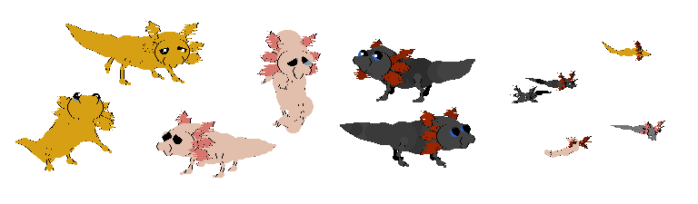
I was gonna go all out with these till I realized how glitchy they are. I may redo them in the future, but for now here they are. Download them here.
Mighty Lions
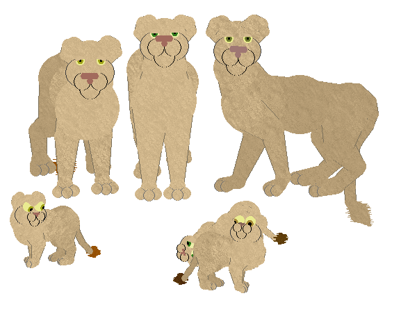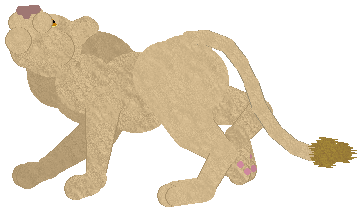
I thought it'd be funny to make a big tough animal but then give it a chinchilla persian base. Their eyes sometimes do what that cub's eyes are doing. Also, they are derpy in ways that I didn't want because I'm still learning how to hex. Click here to download it!